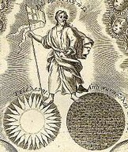

Saturday, February the 12th, 2005
back to: title, date or indexes
Today is the 368th birthday of Jan Swammerdam, the Dutch scientist and pioneer of the microscope. His Bible of Nature, published on the centenary of his birth, contains hundreds of his drawings, mostly of insects. For all the painstaking observation, which today we may see as cold and unemotional, Swammerdam had a highly wrought mystical attitude to nature, and in 1875 he abandoned science for a life of religious contemplation. His book on the mayfly is filled with spiritual verses and musings, as well as his magnificent drawings, like this one.
While finding out more about Swammerdam, I chanced upon the marvellous Origins Of Modernity online exhibition, wherein will be found many old book illustrations on topics including alchemy & chemistry, cosmology & astronomy, literature, mathematics, natural history, natural philosophy, philosophy, physiology & medicine, political philosophy, theology & witchcraft, and travel literature.
The picture below is a detail from Thomas Burnet's Telluris theoria sacra. The theory of the earth : Containing an account of the original of the earth, and of all the general changes which it hath already undergone, or is to undergo, till the consummation of all things. The two first books concerning the deluge, and concerning paradise, published in 1684.
